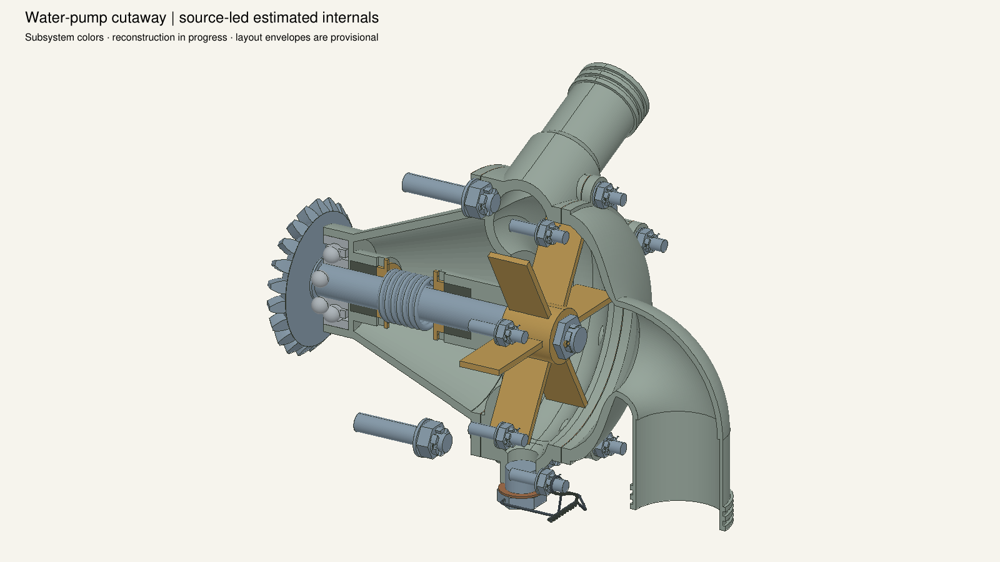
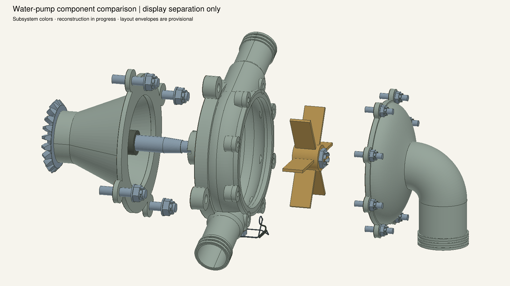
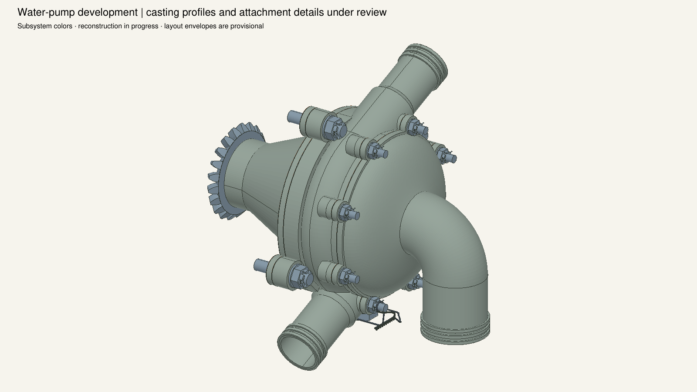
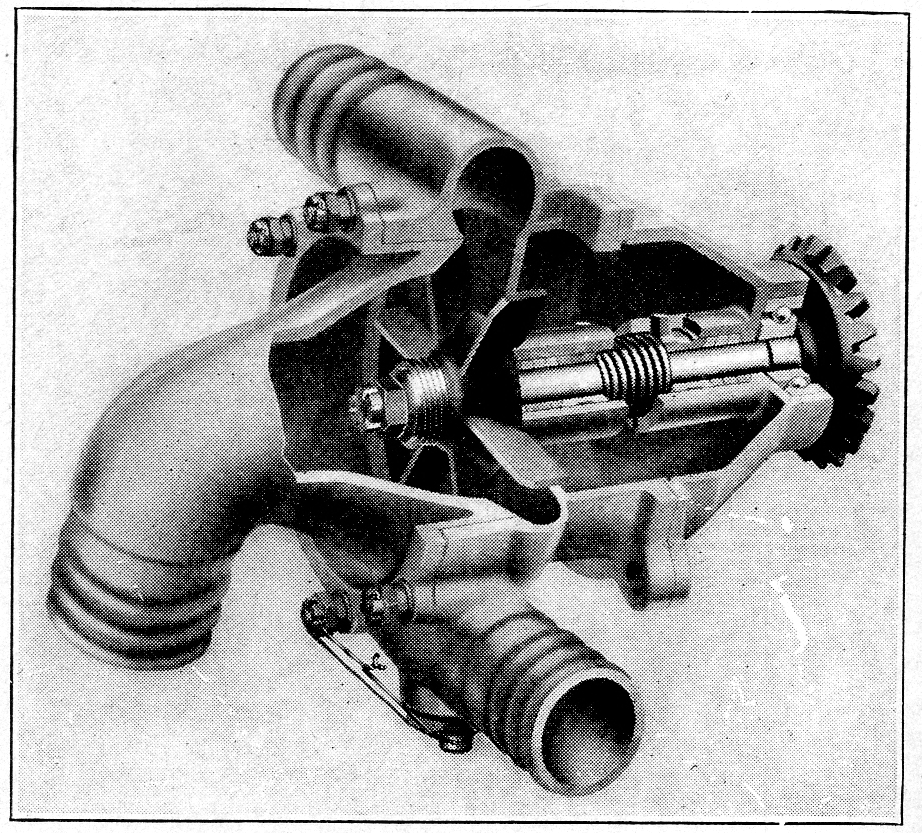
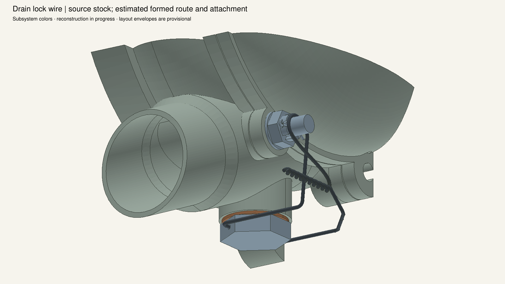
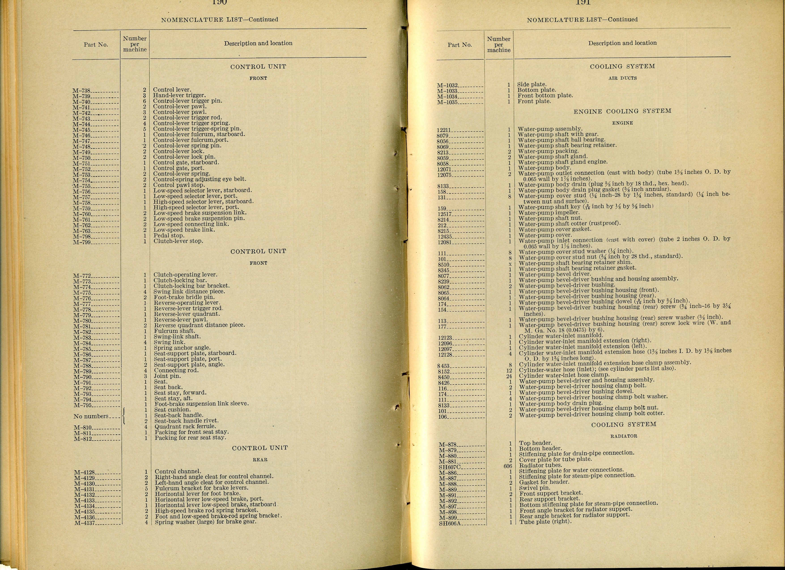
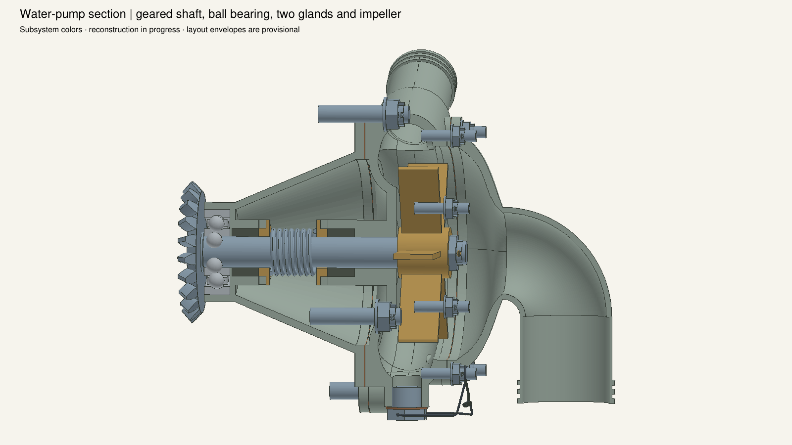
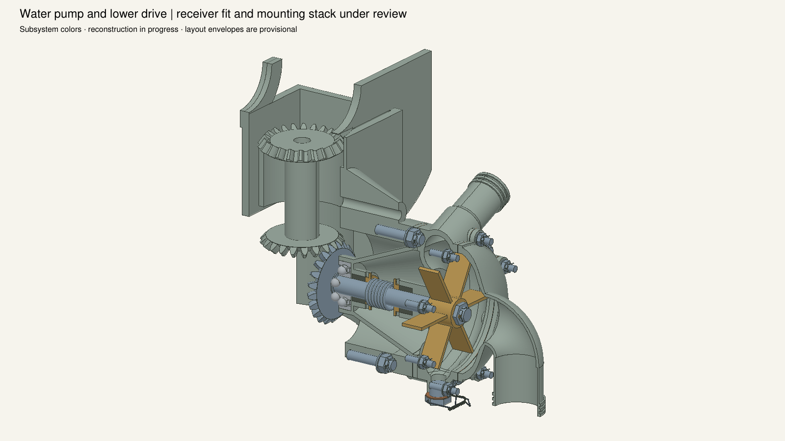

HB191 supplies the hose-end stock, integral connection ownership and selected two packing pieces. Cast profiles, commercial bearing internals and the exact wire route remain estimates; later catalogue packing and fastener alternatives are retained. Source cameras are not registered. Sections, detail cropping and exploded offsets affect display only; the separated wire is unhooked for the display, not a service pose.









